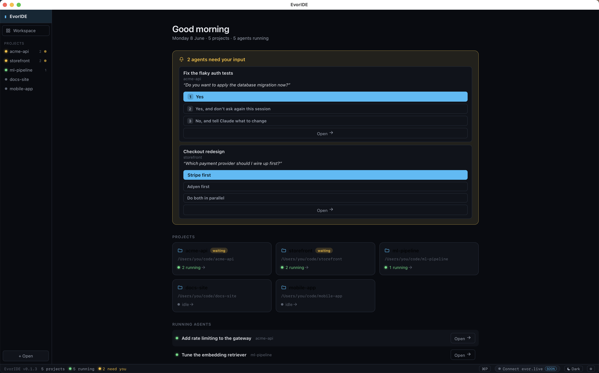

An open, agent-agnostic desktop IDE for Claude Code, Codex, or any CLI agent. Watch and steer every agent across every project from one window — and jump straight to the one that's blocked.

The Home dashboard — which agents are waiting on you (with the actual question + one-click replies), what’s running, and a daily recap, across every project.
Agent-agnostic. Project-centric. Intent-first.
If it runs in a shell — claude, codex, or your own — EvorIDE can host it. No lock-in.
Run several agents at once; a rail shows which projects are busy and which are waiting for you.
Goals & decisions live in .intentflow/, credited to the person and the agent used.
One-click fix-this-issue when a command errors, plus per-agent edit tracking.
Built with Tauri — uses the system WebView (no bundled Chromium). A few MB, not hundreds.
Command palette (⌘P), light/dark themes, a real editor, and git built in.
Grab a prebuilt installer, or build from source.
Head to the Releases page and download the installer for your OS:
| macOS | .dmg (Apple Silicon · arm64) |
|---|---|
| Windows | .msi / .exe |
| Linux | .AppImage / .deb |
First launch: builds aren’t code-signed yet. On macOS, if it says the app
“cannot be verified”, right-click the app → Open (confirm once), or run
xattr -dr com.apple.quarantine /Applications/EvorIDE.app. On Windows,
if SmartScreen warns, click More info → Run anyway.
Prereqs: Rust, Node 20+, pnpm, and the Tauri prerequisites.
git clone $REPO cd evoride/ide pnpm install pnpm tauri dev # run it pnpm tauri build # produce an installer
From launch to your first agent.
This project exists to be built with people.
Adding your own agent is a one-file change (ide/src/lib/clis.ts).
Detection heuristics, the roadmap items, and docs are all open. See
CONTRIBUTING and the
issues — every bug report and idea helps.